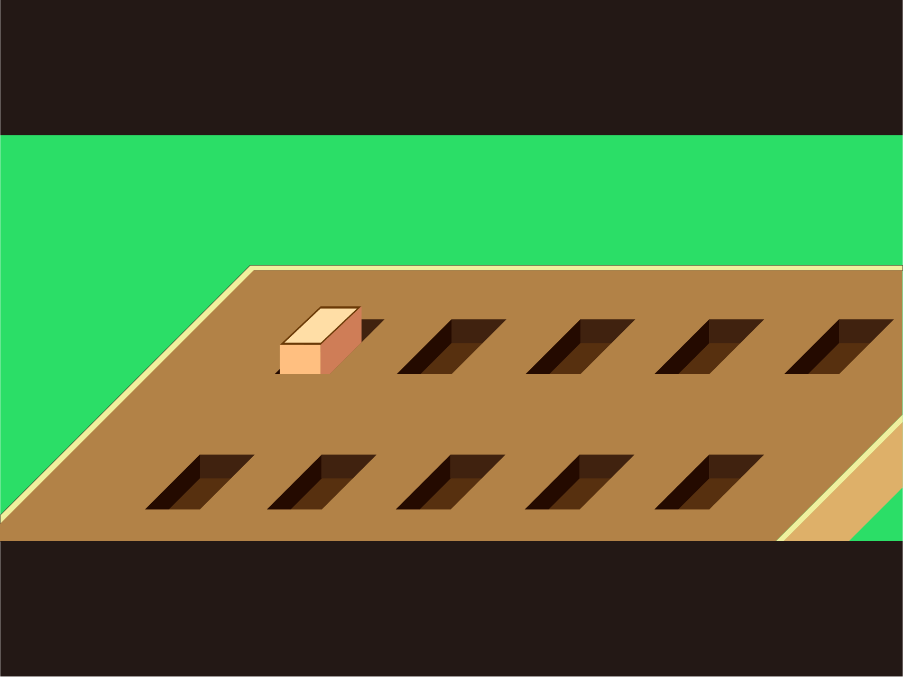
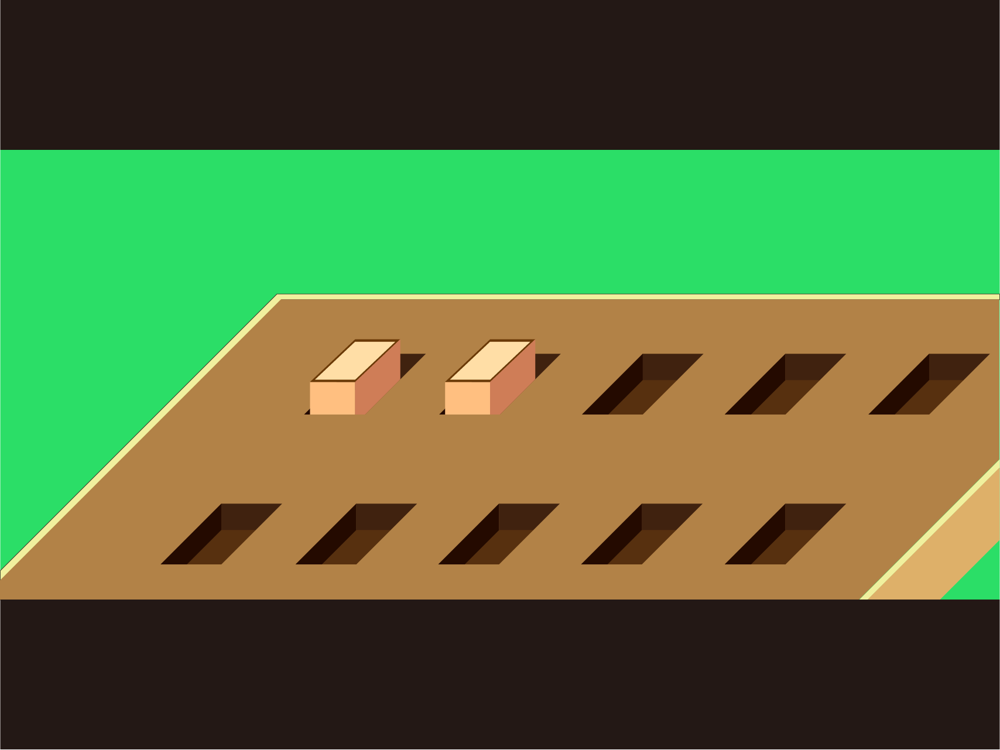
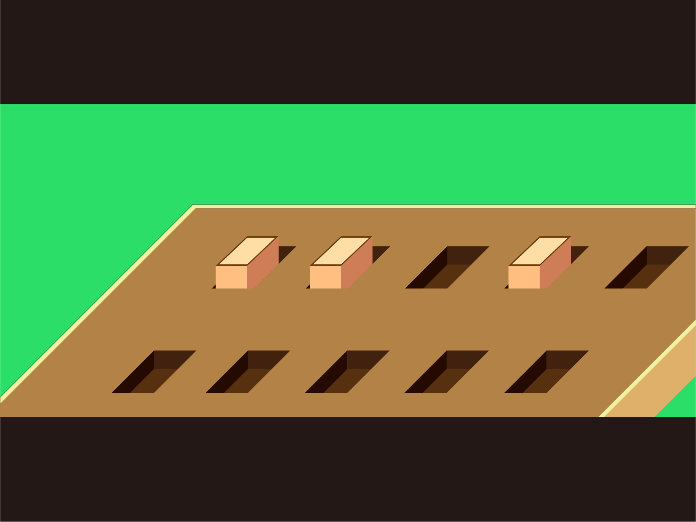

<!--
  게임 이미지 나오는 레이아웃 (좌측 상단))
  클릭 시 게임 시작
  -->
<div class="center game image">
  <a *ngIf="!isStarted" (click)="start()">
    
  </a>
  
  
  

  <app-game-canvas *ngIf="isTutorialThreeFinished"></app-game-canvas>
</div>

<!-- TODO: 이 이미지 1,7에 위치시켜 주세염 -->


<!--
  블록 상태를 보여주는 레이아웃 (우측)
  -->
<div class="game window">
  <h1 *ngFor="let result of results">
    <p *ngIf="result === FORWARD">앞으로</p>
    <p *ngIf="result === BACKWARD">뒤로</p>
    <p *ngIf="result === TURNRIGHT">우회전</p>
    <p *ngIf="result === TURNLEFT">좌회전</p>
  </h1>
</div>

<!--
  게임의 진행 상황을 출력해주는 레이아웃 (좌측 하단)
  -->
<div class="game status">
  <p *ngIf="!isTutorialFinished">
    앞으로 가는 블록을 하나만 연결해주세요. 최적해상도 800 400 )
  </p>
  <p *ngIf="isTutorialFinished">
    잘했어요!
  </p>
</div>

<div class="game button">
  <input type="button" value="처음으로">

</div>
